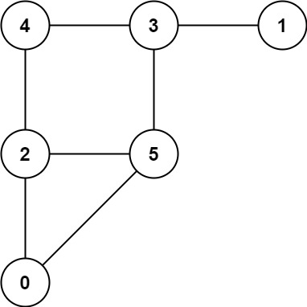
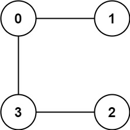

| Category | Difficulty | Likes | Dislikes |
|---|---|---|---|
| Algorithms | Hard | 1004 | 178 |
math | dynamic-programming | graph | topological-sort | memoization | game-theory
microsoft | amazon | google
A game on an undirected graph is played by two players, Mouse and Cat, who alternate turns.
The graph is given as follows: graph[a] is a list of all nodes b such that ab is an edge of the graph.
The mouse starts at node 1 and goes first, the cat starts at node 2 and goes second, and there is a hole at node 0.
During each player's turn, they must travel along one edge of the graph that meets where they are. For example, if the Mouse is at node 1, it must travel to any node in graph[1].
Additionally, it is not allowed for the Cat to travel to the Hole (node 0).
Then, the game can end in three ways:
Given a graph, and assuming both players play optimally, return
1 if the mouse wins the game,2 if the cat wins the game, or0 if the game is a draw.
Example 1:

Input: graph = [[2,5],[3],[0,4,5],[1,4,5],[2,3],[0,2,3]]
Output: 0Example 2:

Input: graph = [[1,3],[0],[3],[0,2]]
Output: 1
Constraints:
3 <= graph.length <= 501 <= graph[i].length < graph.length0 <= graph[i][j] < graph.lengthgraph[i][j] != igraph[i] is unique.